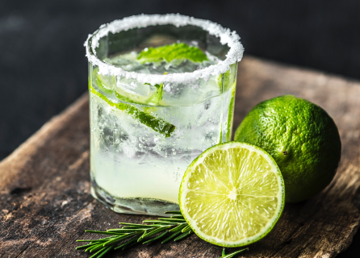

<ion-content>
  <div ion-fixed>
    
    <ion-fab [class]="fabClass" right>
      <button  ion-fab color="trans">
        <ion-icon name="heart"></ion-icon>
      </button>
    </ion-fab>
    <div [class]="recipeClass" (tap)="showMore()">
      <h1>Mojito</h1>
      <ion-grid>
        <ion-row class="header-row">
          <ion-col col-3>QTY</ion-col>
          <ion-col col-3>PRICE</ion-col>
          <ion-col col-3>CAL</ion-col>
          <ion-col col-3>DIF</ion-col>
        </ion-row>
        <ion-row class="data-row">
          <ion-col col-3>4 p</ion-col>
          <ion-col col-3>13.34 €</ion-col>
          <ion-col col-3>200</ion-col>
          <ion-col col-3>EASY</ion-col>
        </ion-row>
      </ion-grid>
      <h2>INTRODUCE</h2>
      <p>Oh le beau mojito ! Ce cocktail hyper frais et savoureux fait toujours l'unanimité à l'heure de l'apéritif. Du
        rhum blanc, de la menion-cole fraîche, du jus de citron, du sucre roux, de la glace pilée... Un vrai bonheur et
        un coup de fraîcheur qui sent bon l'été, les vacances, et qui vous emmène illico à Cuba !</p>

      <h2>INGREDIENTS</h2>
      <ul>
        <li>1/2 lime, juiced</li>
        <li>1 tablespoon white sugar</li>
        <li>5 mint leaves</li>
        <li>ice cubes</li>
        <li>2 fluid ounces white rum</li>
        <li>4 fluid ounces soda water</li>
      </ul>
      <h2>DIRECTIONS</h2>
      <div class="directions">
        <div class="step">
          <h3>STEP 1</h3>
          Muddle the lime juice, sugar, and mint leaves together in the bottom of a cocktail glass until the mint has broken down a bit, about 1 minute. </div>
        <div class="step">
            <h3>STEP 2</h3>
            Fill the glass with ice cubes.</div>
        <div class="step">          
          <h3>STEP 3</h3>
          Add the rum and soda water over the ice. </div>
        <div class="step">          
          <h3>STEP 4</h3>
          Pour the mixture back and forth from from the glass to another glass to mix.</div>
        <div class="step">
            <h3>STEP 5</h3>
            Garnish with the lime wedge and enjoy.</div>
      </div>
    </div>
  </div>
</ion-content>